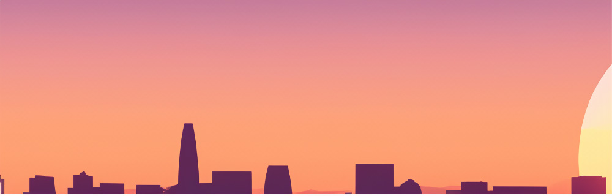

Chawntel (Peaches) Stitts
As a Visual Communications major with proficiency in HTML, CSS, and JavaScript, and the goal of pursuing a PhD in communications, I have a strong foundation and a clear path ahead. Here’s an expanded look at how my current skills and future goals align, along with potential steps and opportunities:
Current Skills and Experience
In Visual Communications, I focus on creating visually compelling designs for various media, understanding the principles of typography and layout to craft effective visual messages, and using industry-standard design tools like Adobe Photoshop, Illustrator, and InDesign. In web development, I structure web content with semantic HTML markup, style it with CSS to create visually appealing layouts, and add interactivity and dynamic elements using JavaScript.
Technical and Creative Integration:
Combining my design skills with web development techniques to create user-friendly and visually appealing websites and applications. Goals and Future Aspirations PhD in Communications: Research and Academia: Engaging in advanced research on communication theories, digital media, and visual culture. I'm Preparing for a career in academia, teaching subjects related to visual communications, digital media, and web development. Specialization: Focusing on areas such as digital media ethics, the impact of visual media on society, or the evolution of web design and user experience. Potential Steps and Opportunities
Web Projects:
Develop a portfolio of web design and development projects that showcase your proficiency in HTML, CSS, and JavaScript, as well as your ability to integrate visual design principles. Research Publications: Start publishing research papers or articles related to visual communications and digital media. This will help establish your academic credibility and contribute to your field.
Teaching and Mentorship: I aim to become a professor or lecturer in communications and grphic design, where you can teach courses, guide students, and contribute to academic research.
Research Leadership:
I want to lead research initiatives and contribute to the development of new theories and methodologies in visual communications and digital media.
Consulting and Development:
I want to use my expertise to consult for businesses and organizations on web design, digital strategy, and visual communications and publish books, articles, and papers that influence the field of communications and shape future research and practice.
Copy Written 2024